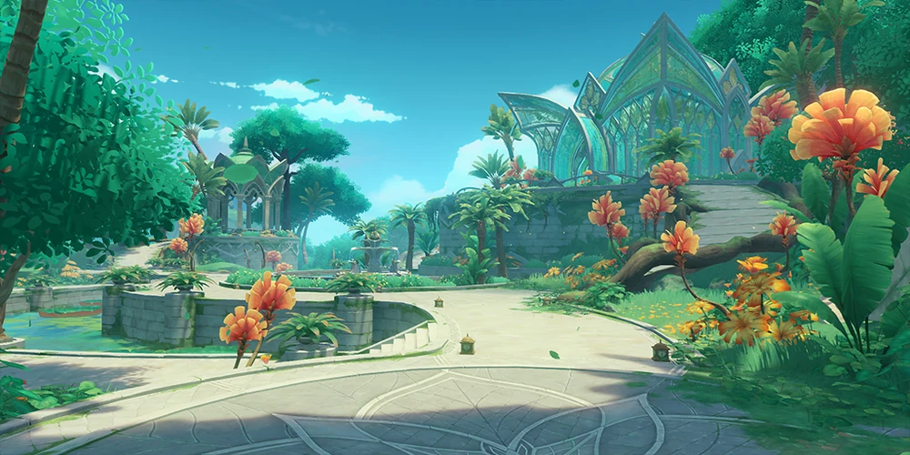
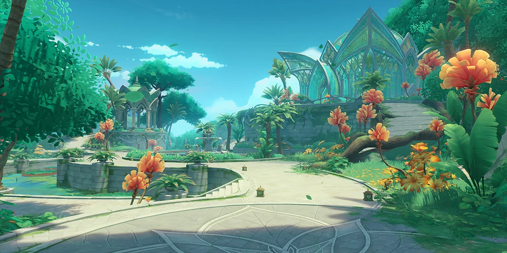
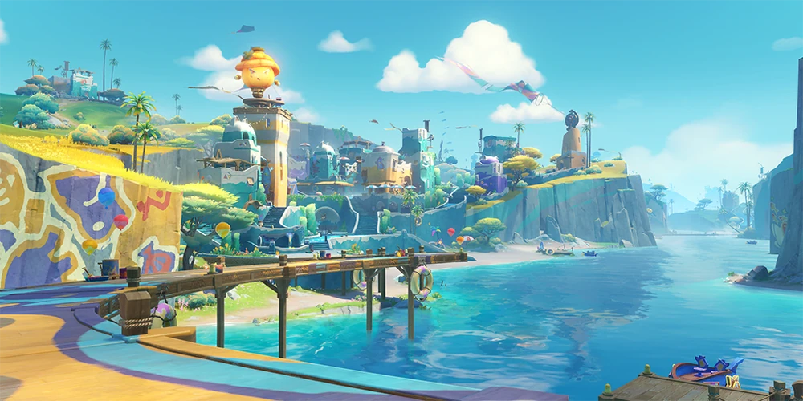
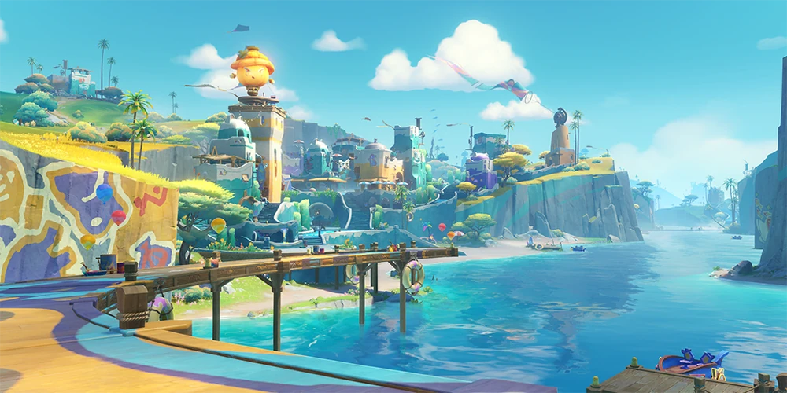

Ką pamatyti?
Mondštatas
Mondštate vyrauja neformali atmosfera, kylanti iš tikėjimo, kad laisvė yra didžiausia vertybė. Šį tikėjimą atnešė regiono dievas Barbatosas, saugantis miestiečius ir kontroliuojantis vėją. Jo palaiminimu didžiojoje Mondštato dalyje vyrauja švelnus klimatas, leidžiantis klestėti pasėliams. Gausu šviežių vaisių, tokių kaip „sunsetijos“ ir obuoliai.
Alkoholis yra didelė kultūros dalis ir socialiai, ir ekonomiškai. Jei norite artimiau susipažinti su šia kultūros dalimi, viena seniausių ir įtakingiausių Mondštato vyninių – „Saulėtekio“ dvaras – kviečia turistus į ekskursijas, kuriose dvaro darbuotojai pasakoja apie tūkstantmetinę jo istoriją ir vyno gaminimo procesą.
Mondštato mieste vyrauja Gotikos stiliaus architektūra. Daugiaaukščiai namai raudonais stogais rikiuojasi gatvėse, kuriose vyksta kasmetinis „Vėjo žiedo“ festivalis – metas, kuomet kiekvienas Mondštatietis švenčia savo šalies laisvę ir meldžiasi Barbatosui už gerą ateinančių metų vėją.
Mondštatas taip pat kviečia aplankyti savo Favonijaus katedrą, įsikūrusią miesto širdyje.
Jei esate gamtos žmogus, galite aplankyti žymiausius Mondštato griuvėsius, miškus ar uolas, kurie yra įspūdingi, tačiau ir skaudūs Dievų karo, vykusio prieš 500 metų, palikimai.


Liyue


Inazuma


Sumeru
 

Fontaine


Natlan

 

Nod-Krai